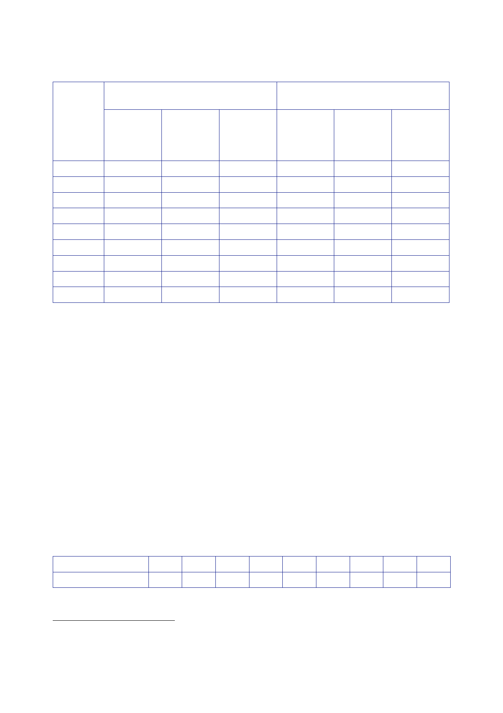

13.1 |
Resources
2001/02
2002/03
2003/04
2004/05
2005/06
2006/07
2007/08
2008/09
2009/10
MOD core
budget
Near
cash
budget
23.57
24.20
25.58
26.48
27.60
28.66
29.97
30.76
31.92
Real
terms
(2008/09
prices)
Real
terms
%
change
on
previous
year
28.44
0.32
28.29
‑
0.53
29.08
2.79
29.29
0.72
29.97
2.32
30.23
0.87
30.15
‑
0.26
30.76
2.02
31.30
1.76
Actual
defence expenditure
(inc.
NACMO)
Cash
outturn
+
Real
terms
(2008/09
prices)
Real
terms
%
change
on
previous
year
24.87
30.02
3.31
26.99
31.56
5.12
29.34
33.36
5.72
29.52
32.66
‑
2.09
30.60
33.24
1.76
31.45
33.18
‑
0.17
33.49
34.33
3.47
36.43
36.43
6.12
39.87
39.08
7.27
480.
The Inquiry
concludes in Section 9.8 that, from July 2005 onwards, decisions
in
relation to
resources for Iraq were made under the influence of the demands of
the UK
effort in
Afghanistan. Although Iraq remained the stated UK Main Effort, the
Government
no longer
had the option of a substantial reinforcement of its forces
there.
481.
The funding
approved for Urgent Operational Requirements (UORs)
increased
significantly
in 2006/07, as security in Iraq deteriorated, expenditure on
Afghanistan
increased,
and the Government provided new equipment to protect deployed
personnel
(see
Section 14.1).
482.
The table
below shows the funding approved by the Treasury for UORs
relating
to Iraq
from 2002/03 to 2009/10.289
Information
on actual expenditure on UORs was not
captured
separately until 2008/09.
UOR
approvals (£m)
02/03 03/04
04/05 05/06 06/07 07/08 08/09 09/10 Total
500 180 130
100 420 450
40
5
1,825
288
Figures
provided by Defence Analytical Services and Advice
(DASA).
289
Letter
Quinault to Aldred, 1 March 2010, [untitled].
523